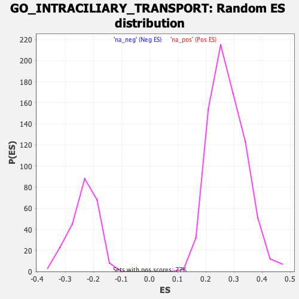

| | | Dataset | Recurrence |
| Phenotype | NoPhenotypeAvailable |
| Upregulated in class | na_neg |
| GeneSet | GO_INTRACILIARY_TRANSPORT |
| Enrichment Score (ES) | -0.50550956 |
| Normalized Enrichment Score (NES) | -2.1505392 |
| Nominal p-value | 0.0 |
| FDR q-value | 0.04899851 |
| FWER p-Value | 0.174 |
Table: GSEA Results Summary
 Fig 1: Enrichment plot: GO_INTRACILIARY_TRANSPORT
Fig 1: Enrichment plot: GO_INTRACILIARY_TRANSPORT
Profile of the Running ES Score & Positions of GeneSet Members on the Rank Ordered List
| SYMBOL | RANK IN GENE LIST | RANK METRIC SCORE | RUNNING ES | CORE ENRICHMENT | | 1 | IFT80 | 1326 | 1.480 | -0.0294 | No |
| 2 | BBS12 | 1661 | 1.368 | -0.0108 | No |
| 3 | IFT57 | 1893 | 1.291 | 0.0111 | No |
| 4 | SSX2IP | 3111 | 1.029 | -0.0245 | No |
| 5 | TTC21A | 3620 | 0.936 | -0.0261 | No |
| 6 | RABL2B | 4506 | 0.801 | -0.0506 | No |
| 7 | CEP131 | 4685 | 0.773 | -0.0395 | No |
| 8 | TTC26 | 7965 | 0.359 | -0.1985 | No |
| 9 | KIF17 | 8322 | 0.318 | -0.2085 | No |
| 10 | IFT20 | 8365 | 0.313 | -0.2024 | No |
| 11 | IFT27 | 8517 | 0.299 | -0.2024 | No |
| 12 | LCA5L | 8586 | 0.293 | -0.1982 | No |
| 13 | TRAF3IP1 | 8803 | 0.269 | -0.2022 | No |
| 14 | IFT43 | 9625 | 0.177 | -0.2398 | No |
| 15 | IFT52 | 10113 | 0.126 | -0.2615 | No |
| 16 | TRIP11 | 10654 | 0.067 | -0.2875 | No |
| 17 | IFT140 | 11108 | 0.017 | -0.3103 | No |
| 18 | TTC30A | 11513 | -0.029 | -0.3303 | No |
| 19 | LCA5 | 11519 | -0.030 | -0.3297 | No |
| 20 | TNPO1 | 11761 | -0.058 | -0.3406 | No |
| 21 | SSNA1 | 11841 | -0.068 | -0.3429 | No |
| 22 | RPGR | 12453 | -0.141 | -0.3706 | No |
| 23 | TTC21B | 12719 | -0.173 | -0.3796 | No |
| 24 | PCM1 | 12741 | -0.176 | -0.3761 | No |
| 25 | CLUAP1 | 13113 | -0.229 | -0.3892 | No |
| 26 | KIFAP3 | 13605 | -0.294 | -0.4067 | No |
| 27 | IFT74 | 13776 | -0.317 | -0.4072 | No |
| 28 | DYNLL2 | 14609 | -0.423 | -0.4388 | No |
| 29 | IFT172 | 14620 | -0.425 | -0.4282 | No |
| 30 | MAK | 16126 | -0.652 | -0.4885 | Yes |
| 31 | KIF3A | 16393 | -0.696 | -0.4839 | Yes |
| 32 | TCTEX1D2 | 16444 | -0.706 | -0.4681 | Yes |
| 33 | DYNC2LI1 | 16445 | -0.706 | -0.4496 | Yes |
| 34 | IFT81 | 16583 | -0.732 | -0.4375 | Yes |
| 35 | KIF3B | 16625 | -0.740 | -0.4203 | Yes |
| 36 | DYNLL1 | 16833 | -0.784 | -0.4104 | Yes |
| 37 | IFT46 | 16856 | -0.789 | -0.3909 | Yes |
| 38 | DYNC2H1 | 17177 | -0.859 | -0.3849 | Yes |
| 39 | TUB | 17380 | -0.907 | -0.3715 | Yes |
| 40 | IFT88 | 17539 | -0.946 | -0.3549 | Yes |
| 41 | WDR60 | 17556 | -0.949 | -0.3309 | Yes |
| 42 | DYNLRB1 | 17616 | -0.967 | -0.3086 | Yes |
| 43 | WDR19 | 17618 | -0.968 | -0.2834 | Yes |
| 44 | WDR35 | 18515 | -1.269 | -0.2962 | Yes |
| 45 | WDR34 | 18550 | -1.285 | -0.2643 | Yes |
| 46 | ARL3 | 18780 | -1.407 | -0.2393 | Yes |
| 47 | HSPB11 | 18840 | -1.445 | -0.2045 | Yes |
| 48 | KIF3C | 19187 | -1.703 | -0.1778 | Yes |
| 49 | TTC30B | 19203 | -1.721 | -0.1336 | Yes |
| 50 | IFT22 | 19238 | -1.770 | -0.0890 | Yes |
| 51 | DYNLRB2 | 19305 | -1.879 | -0.0433 | Yes |
| 52 | IFT122 | 19403 | -2.083 | 0.0062 | Yes |
Table: GSEA details [plain text format]

Fig 2: GO_INTRACILIARY_TRANSPORT: Random ES distribution
Gene set null distribution of ES for GO_INTRACILIARY_TRANSPORT